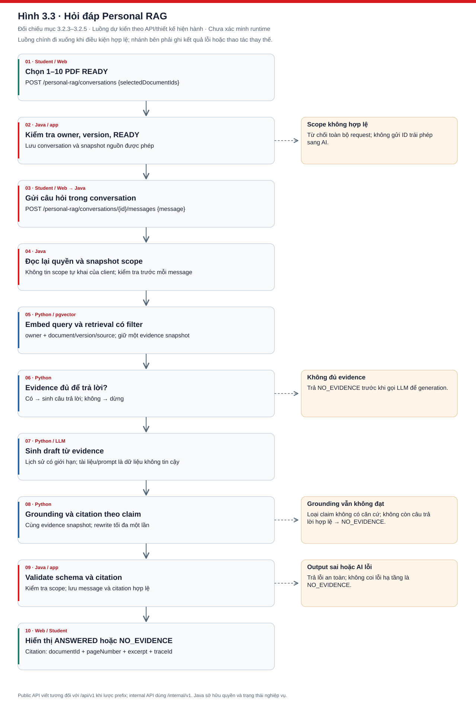
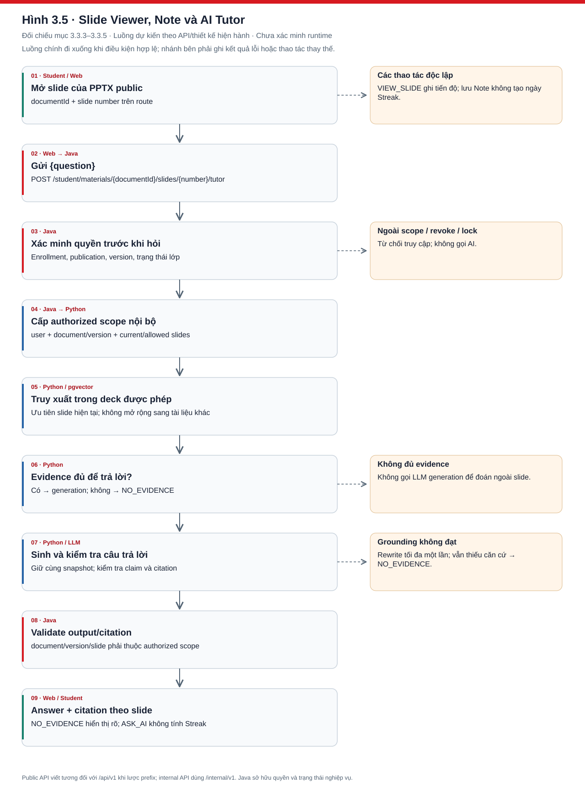
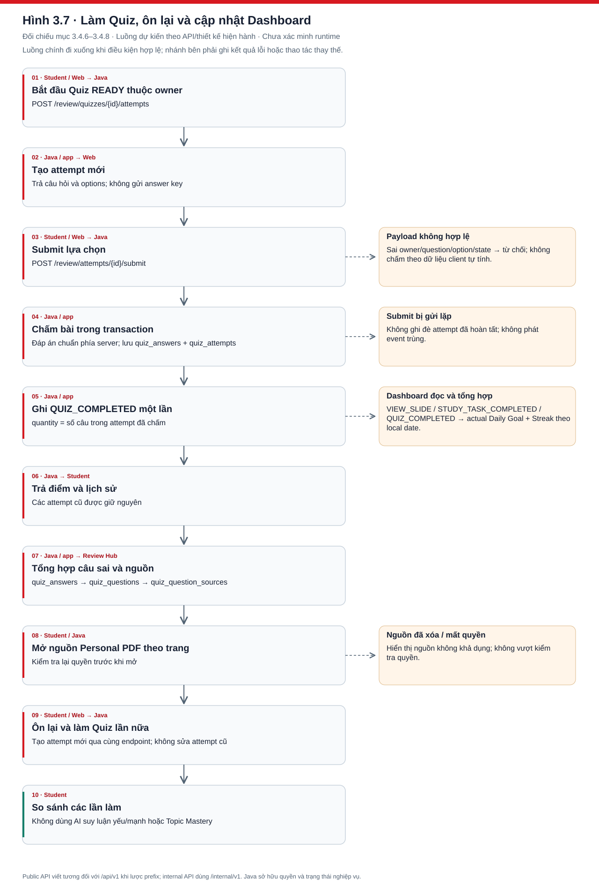
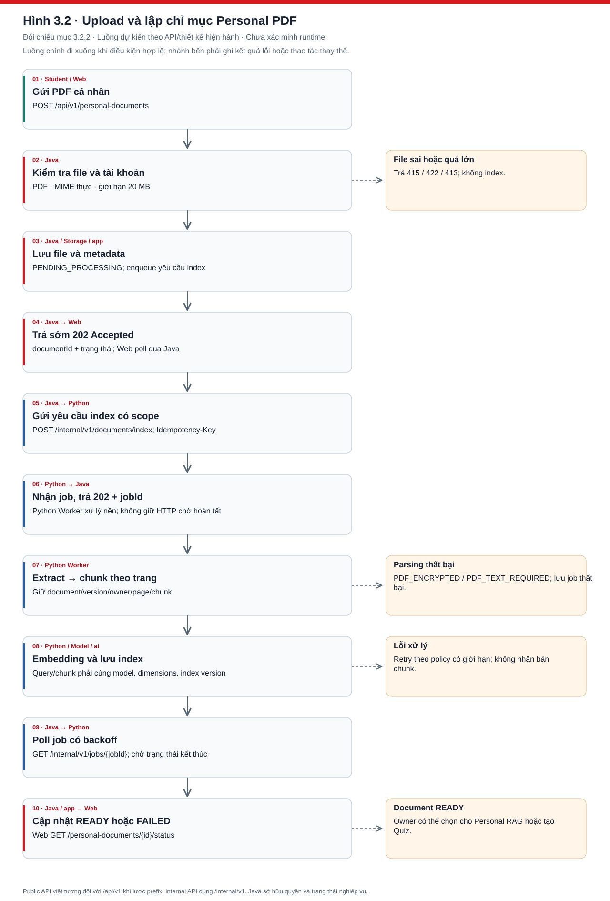
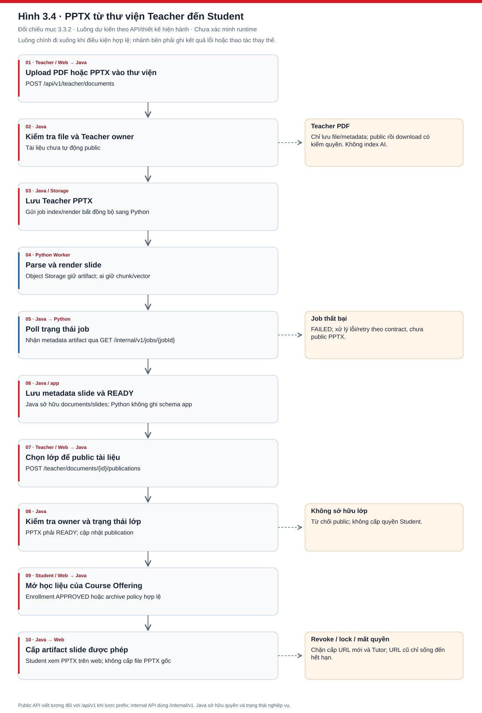

1. Personal RAG có kiểm chứng nguồn
PDF trang 25 nhánh RAG, trang 33 pipeline RAG, trang 57 Hình 3.1; Markdown Hình 2.6 / 3.3.
Hình dưới mô tả các tác nhân, bước xử lý và điểm kiểm soát của chức năng.

Evidence gate chạy trước LLM. Rewrite tối đa một lần trên cùng snapshot. Java kiểm quyền, version và citation trước lưu; lỗi hạ tầng không đổi thành NO_EVIDENCE.
SVG · PNG · Nguồn Mermaid


2. Hỏi đáp tại slide
PDF trang 33 pipeline Tutor, trang 62 Hình 3.4; Markdown Hình 2.7 / 3.5.
Hình dưới mô tả các tác nhân, bước xử lý và điểm kiểm soát của chức năng.

Java dựng allowed slide scope từ quyền học liệu. Python ưu tiên slide hiện tại nhưng không vượt scope. Citation dùng documentId + slideNumber, không thay documentId bằng publicationId.
SVG · PNG · Nguồn Mermaid


3. Sinh, review và accept Quiz
PDF trang 25 nhánh Quiz, trang 33 pipeline Quiz, trang 64 Hình 3.5; Markdown Hình 2.8 / 3.6.
Hình dưới mô tả các tác nhân, bước xử lý và điểm kiểm soát của chức năng.

Quiz có đúng bốn phương án và một đáp án. Python repair tối đa một lần; Java revalidate rồi lưu REVIEW_REQUIRED. Regenerate tạo quizId mới; Accept chỉ chuyển READY khi destination hợp lệ.
SVG · PNG · Nguồn Mermaid


4. Làm Quiz và ôn lại câu sai
PDF trang 26, trang 66 Hình 3.6; Markdown Hình 2.9 / 3.7.
Hình dưới mô tả các tác nhân, bước xử lý và điểm kiểm soát của chức năng.

Java chấm điểm và phát QUIZ_COMPLETED idempotent. Câu sai dẫn về Personal PDF theo trang, không suy luận năng lực; làm lại tạo attempt mới.
SVG · PNG · Nguồn Mermaid


5. Upload và index Personal PDF
PDF trang 32 nhánh Personal, trang 59 Hình 3.2; Markdown Hình 3.2.
Hình dưới mô tả các tác nhân, bước xử lý và điểm kiểm soát của chức năng.

PDF có text layer mới được index; lỗi mã hóa hoặc không có text kết thúc bằng safe code. Worker idempotent và Java đồng bộ trạng thái qua polling.
SVG · PNG · Nguồn Mermaid


6. Thư viện và publication PDF/PPTX
PDF trang 32 nhánh PPTX, trang 61 Hình 3.3; Markdown Hình 3.4.
Hình dưới mô tả các tác nhân, bước xử lý và điểm kiểm soát của chức năng.

Teacher PDF không gửi Python. PPTX xử lý thành công mới READY; public là thao tác riêng của Teacher owner. Student chỉ nhận slide artifact, không tải PPTX gốc.
SVG · PNG · Nguồn Mermaid


7. Kiến trúc phân tầng Java
PDF trang 67 Hình 3.7; Markdown Hình 3.8.
Hình dưới mô tả các tác nhân, bước xử lý và điểm kiểm soát của chức năng.

Java giữ toàn bộ nghiệp vụ, lifecycle và scoring. Adapter AI chỉ trao đổi contract, không truy cập vector trực tiếp. Tên tầng là thiết kế, không chứng minh class đã được cài đặt.
SVG · PNG · Nguồn Mermaid

8. Python API và worker bất đồng bộ
PDF trang 68 Hình 3.8; Markdown Hình 3.9.
Hình dưới mô tả các tác nhân, bước xử lý và điểm kiểm soát của chức năng.

Index/deindex dùng worker và job polling. RAG/Tutor/Quiz trả structured result; Python không cập nhật app hoặc chấm điểm.
SVG · PNG · Nguồn Mermaid

9. Kiểm quyền và cấp signed URL
PDF trang 68 Hình 3.9; Markdown Hình 3.10.
Hình dưới mô tả các tác nhân, bước xử lý và điểm kiểm soát của chức năng.

URL chỉ cấp cho tài nguyên được phép và TTL ngắn theo policy. Signed URL không phải HttpOnly cookie; revoke chặn cấp mới, URL cũ còn hiệu lực đến hết TTL.
SVG · PNG · Nguồn Mermaid